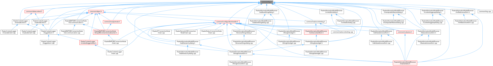
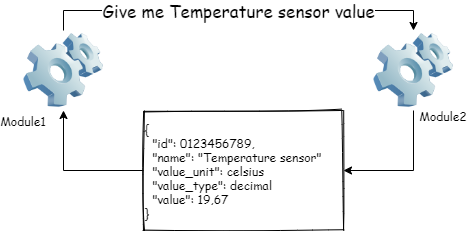
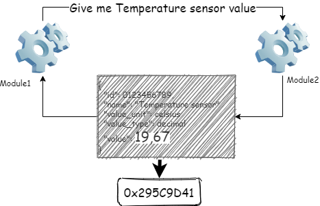
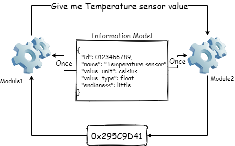
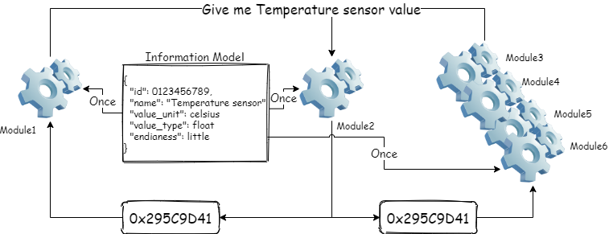
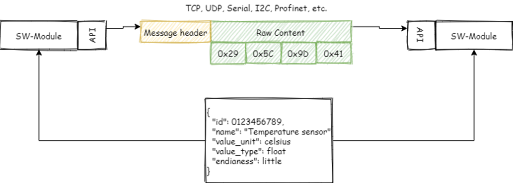
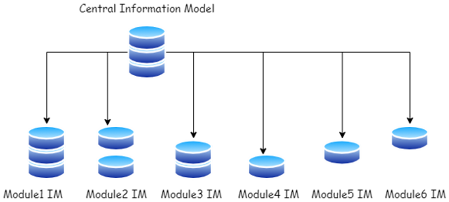

Software solutions are often very versatility. There are many different modules that communicate with each other. Many different interfaces are needed, the same things are done in several different places, changes affect everywhere, etc.
An open software solution allows for the multidimensionality of software solutions, but it does through simplicity.
The picture below shows a basic query, where Module1 asks from Module2 for the value of the temperature sensor. In the case of this example, Module2 return json will return all the data that Module1 needs to process the data.
When we look at the returned json content, we notice that only the number 19.67 is variable data. All other information is permanent, which means that this information only needs to be transmitted once.
The number 19.67 is dynamic data, which in the case of the example is a string. When computer needs to process the number, it must converts to the number format so that the computer can understand it, such as float or double. The value range of a float number is 1.175494351 E - 38 to 3.402823466 E + 38. If we want to store or transfer a float number, we need to handle at least 14 bytes. But...
A float number only needs 4 bytes for the computer, which means that only this number of bytes (32 bits) is needed if we keep dynamic and static data separate.
In a data model-based structure, static information is stored in a data model. Program modules load all the necessary information for their operation when they start execution (only once). This enables an extremely simple interface which can be use to transfer dynamic content. All the information explaining the dynamic content is separate, so the same interface structure can be used to transfer almost all data types (int, text, image, etc.).
In an informatio model-based solution, static information is not transferred with each query, which enables the utilization of dynamic information in new ways. This is possible because new innovations are often incremental. Existing things are combined in new ways. In an information model-based solution, a new purpose of use does not set new requirements for the module who is generating dynamic data.

At its simplest, only raw content can be transmitted over the interface. In an open information model-based solution, a header is added to the "message", which identifies the sender and tells whether it is a monitoring or a control message. This simple message structure allows the use of different communication protocols, either alone or mixed. For example, the data source can be a Rapsberry Pico-style microcontroller that is connected to the computer via a serial port. The computer can echo the message to other computers over the tcp protocol. All recipients know where the message came from and what it contains, because the message contains a unique id. Unique id makes possible to connect raw(dynamic) information and explaining(static) information.
In an open information model-based solution, things are identified using the UUID identification system. A UUID is a 128-bit universally unique identifier. A 128-bit number can identify 340282366920938463463374607431768211456 unique things. Although the probability of a UUID being copied is not zero, it is generally considered to be close enough to zero to be insignificant.
The use of UUID enables data in the information model to be stored in different systems. The same thing can have different features in different systems, which makes it possible that all the information in the information model does not have to be open to everyone. This allows partial opening of closed systems.
When handling with things, you also need to know the connections between different things. For example, one thing can explain the value to be transferred, another thing explains the block formed by several values, Third thing explains the query interface, etc. On the other hand, the same transferable value can be part of the building's hierarchy. The value of the temperature sensor is part of the temperature sensor, which is part of the room, which is part of the building, etc.
The open information model of things has the concept of hierarchy, which allows things to be connected to different structures. Each hierarchy level has a name, a hierarchy uuid, a parent uuid, a thing uuid, and an order. The Hierarchy uuid is the same kind of uuid as the uuid of thing. It is a universally unique value, which enables hierarchy structures to be transferred from one system to another. The Parent uuid refers to the hierarchy uuid, which means that each hierarchy level can have an unlimited number of children. Each hierarchy level has one parent only. A thing can be connected to the hierarchy level by defining the hierarchy's thing uuid. Because the same thing can be connected to several hierarchies, it is possible to have several different perspectives to same thing. One perspective can be the software configuration perspective, another can be the maintenance perspective, the third can be the research report perspective, etc. Hierarchies on the same level can be placed in different orders. In this way it is possible to execute different things in specific order.
